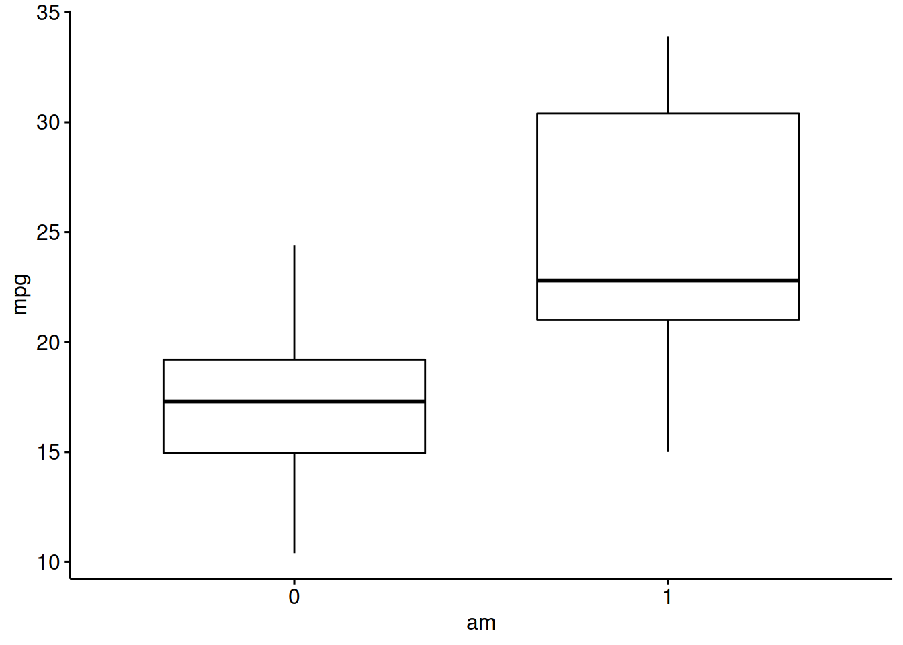
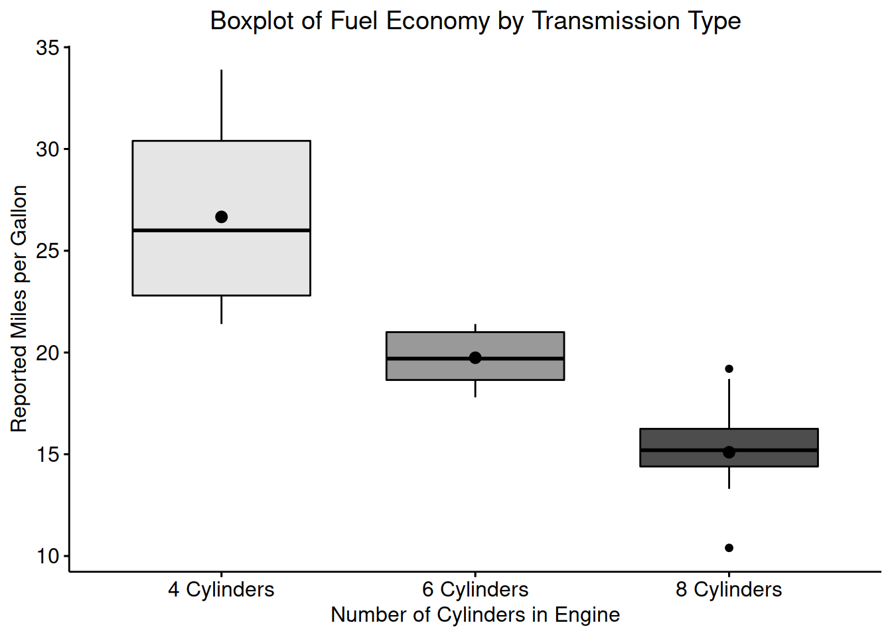

Graphing Lab
Example Data Set mtcars
| Make and Model | Miles per Gallon | Number of Cylinders | Displacement in Cubic Inches | Gross Horsepower |
|---|---|---|---|---|
| Toyota Corolla | 33.9 | 4 | 71.1 | 65 |
| Fiat 128 | 32.4 | 4 | 78.7 | 66 |
| Honda Civic | 30.4 | 4 | 75.7 | 52 |
| Lotus Europa | 30.4 | 4 | 95.1 | 113 |
| Fiat X1-9 | 27.3 | 4 | 79.0 | 66 |
| Porsche 914-2 | 26.0 | 4 | 120.3 | 91 |
Scatter plots - base
Main Function Call:
plot(mtcars$mpg~mtcars$hp)
Scatter plots - ggplot2
Main Function Call:
ggplot(mtcars, mapping = aes(x = hp, y = mpg)) +
geom_point()
Linear Regression - base
Main Function Call:
plot(mtcars$mpg~mtcars$hp)
abline(lm(mtcars$mpg~mtcars$hp))Linear Regression - ggpubr
Main Function Call:
ggscatter(mtcars, "hp", "mpg",
add = "reg.line"
)Boxplots - base
Main Function Call:
boxplot(mtcars$mpg)
Boxplots - ggpubr
Main Function Call:
ggboxplot(mtcars, "am", "mpg")Histograms - base
Main Function Call:
hist(mtcars$mpg)
Bar Charts - ggplot2
Main Function Call:
ggplot(mtcars, mapping = aes(x = as.factor(cyl))) +
geom_bar()
Bar Charts, Sorted - ggplot2
Main Function Call:
ggplot(mtcars[mtcars$cyl %in% c(4, 6),],
mapping = aes(x = as.factor(cyl))) +
geom_bar()
Saving Graphics - base
“Headless” method, without any graphical output
jpeg("mtcars-hpXmpg.jpg")
plot(mtcars$hp~mtcars$mpg)
dev.off()Desktop method, with graphical output
plot(mtcars$hp~mtcars$mpg)
dev.copy(png, "mtcars-hpXmpg.jpg")
dev.off()Saving Graphics - ggplot2
“Headless” method, without any graphical output
ggsave("scatterplot-hpXmpg.png",
ggplot(mtcars, mapping = aes(x = hp, y = mpg)) + geom_point()
)Desktop method, with graphical output
ggplot(mtcars, mapping = aes(x = hp, y = mpg)) + geom_point()
ggsave("scatterplot-hpXmpg.png")Goals
By the end of the Lab, we have learned:
- How to organize data for ease of graphing
- How to generate graphs for descriptive statistics
- How to add additional detail to graphs
- How to save and export graphics